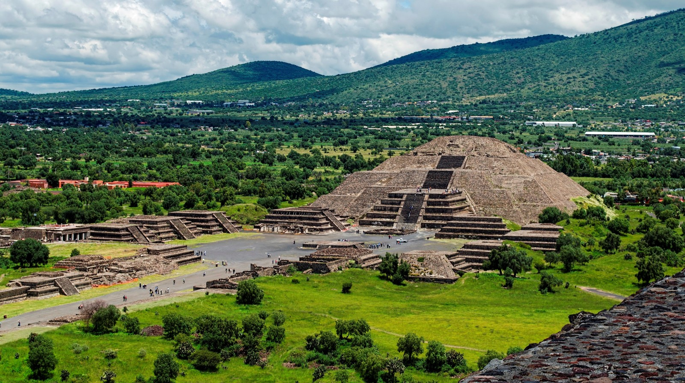
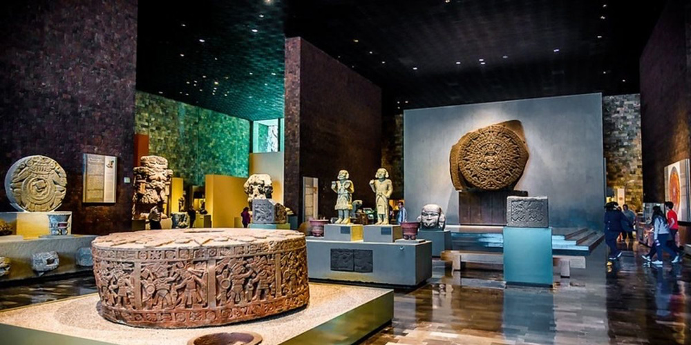
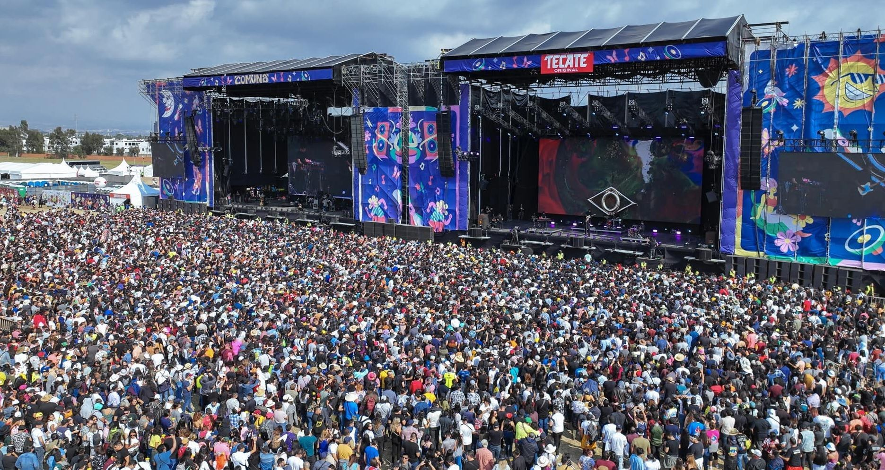

Descubre el Centro de México
Lunes 7 de octubre de 2024 por Ivan Gonzalez G.
En este pequeño blog, comparto diversas maravillas que México tiene para ofrecer. Como ingeniero en computación y viajero apasionado, he decidido abrir mi propia agencia de viajes para ayudar a otros a encontrar los mejores destinos en diferentes épocas del año.
Desde impresionantes ruinas prehispánicas hasta los mejores lugares sociales, hay algo para cada tipo de viajero
Centro de Mexico
Una visita al Centro de México no estaría completa sin explorar la Ciudad de México, donde la historia y la modernidad coexisten. Disfruta de una caminata por el Zócalo, el corazón de la ciudad, y maravíllate con la belleza de la Catedral Metropolitana.
Aquí hay algunas opiniones sobre las experiencias de otros viajeros:
“Visitar Teotihuacan fue una experiencia inolvidable. Subir a la Pirámide del Sol me dejó sin aliento.”
La riqueza cultural del centro de México se refleja en sus tradiciones, gastronomía y festivales. La Feria de las Flores en Xochimilco es un evento que no te puedes perder.
Sitios Turisticos
Te mostramos algunas de las actividades mas divertidas que puedes hacer

Descubre las piramides mas increibles
5 de octubre de 2024

Museo de nacional de antropologia
30 de septiembre de 2024

vida nocturna y conciertos
30 de septiembre de 2024
recomendaciones
Como podras imaginar, la cantidad de eventos que hay en Mexico es inmensa, es por ello que AUN no contamos con la infrestructura y el quipo para cubrir todos los eventos, pero te puedo recomendar algunos de los mejores que utilice en mis viajes antes de abrir mi porpia agencia!
- Para comparar precios, usa Tripadvisor.
- Para reservar hoteles, considera Booking.com.
- Para obtener recomendaciones de restaurantes, visita Yelp.
Estos recursos son muy útiles para maximizar tu experiencia en México.
Próximamente
Sientete libre de explorar el sitio web tanto como quieras, y siempre que necesites ayuda el boton de llamada esta siempre disponible.
Lugares imprescindibles en el Norte de México
30 de septiembre de 2024 por Alma Mendez
Este artículo detalla algunos de los eventos y lugares que no puedes dejar de visitar en el norte de México. Desde impresionantes paisajes desérticos hasta vibrantes ciudades, la diversidad cultural es impresionante.
“El norte de México es un destino lleno de aventura y emoción.”
En esta región, podrás disfrutar de eventos únicos que destacan la riqueza cultural y natural. No te pierdas la Gran Carrera del Desierto de Sonora los días 26 y 27 de octubre, donde podrás experimentar la emoción de las carreras en un entorno espectacular. También se celebrará el Gatorade G15 el 10 de noviembre en Guadalajara, un evento imperdible para los amantes del deporte y la diversión.
Y si buscas algo más tranquilo, el Maratón Veracruzano Boca del Río el 8 de diciembre es una excelente oportunidad para disfrutar de un recorrido por la costa, con vistas impresionantes y un ambiente festivo.
Ejemplo de tabla de precios
No olvides hacer un presupuesto para tu viaje. Aquí hay un ejemplo de gastos promedio:
| Actividad |
Costo aproximado |
Duración |
| Gran Carrera del Desierto de Sonora |
$1000 |
2 días |
| Gatorade G15 |
$50 |
1 día |
| Maratón Veracruzano Boca del Río |
$80 |
4 horas |
| Totales |
$285 |
|
Planifica con anticipación para disfrutar al máximo de tu experiencia.
Las experiencias deportivas en México
29 de septiembre de 2024 por Gerardo de los Santos
El deporte en México es una forma de vida. He participado en eventos que no solo desafían el cuerpo, sino que también unen a las personas.
- Maratón Internacional de la Ciudad de México: Una carrera vibrante con el apoyo de miles de espectadores.
- Carrera de la Mujer en Puebla: Celebración de la fuerza y la unidad entre mujeres.
- Triatlón de Acapulco: Combina natación, ciclismo y carrera en un entorno paradisíaco.
Estos eventos son más que competiciones, son celebraciones de la comunidad. Para más sobre el deporte en México, lee este artículo.